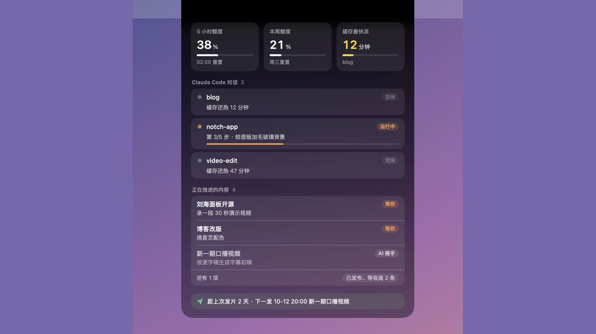
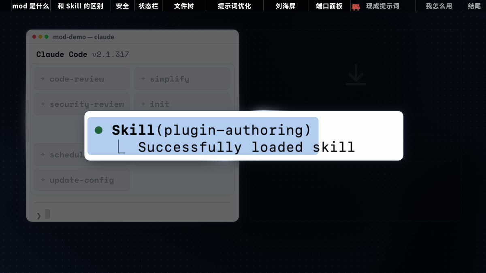
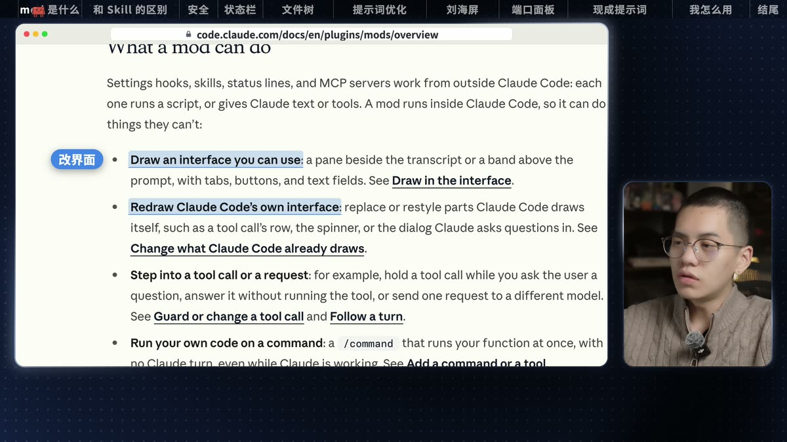
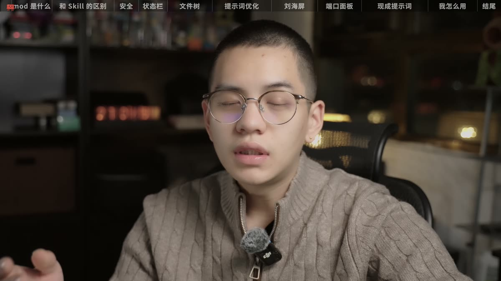
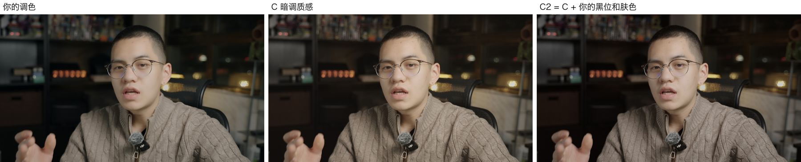
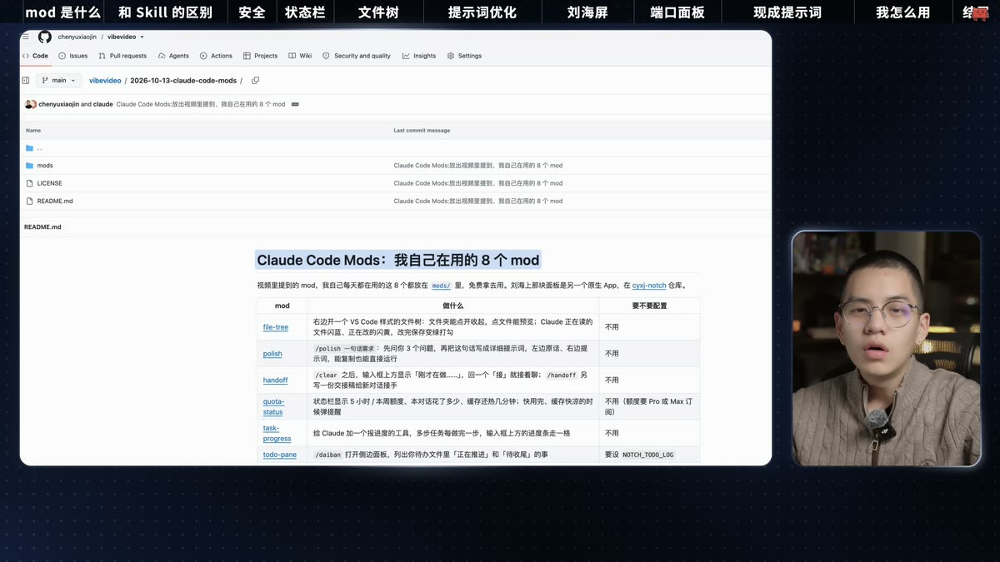
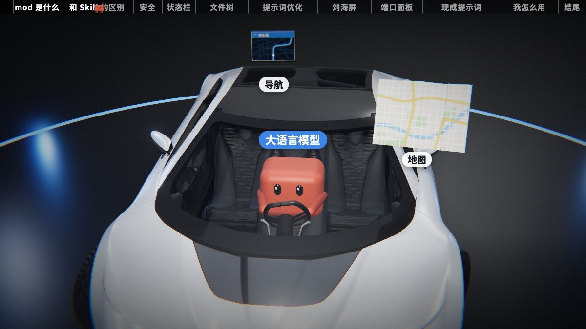
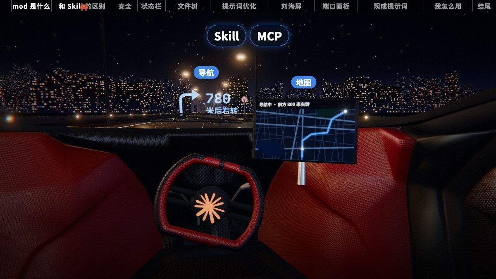
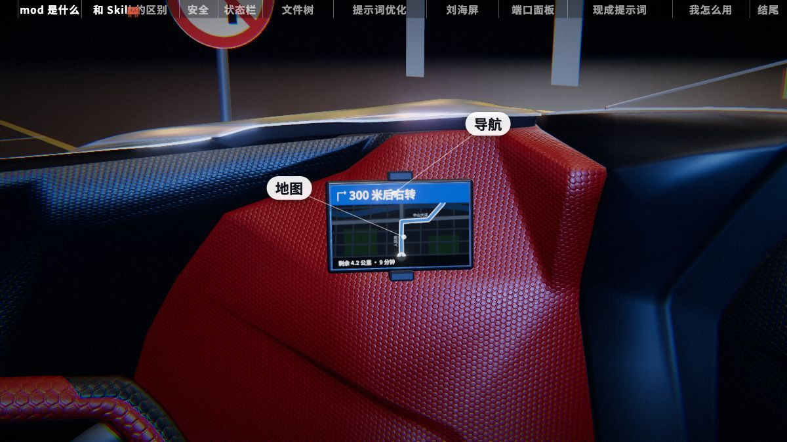

先有 mod，才有这条片

- 刘海台是一个晚上做出来的：19:05 第一版是黑底上排几行字，23:15 定稿，中间改了几轮
- 给它供数据的 5 个 mod，10-13 实跑测试 52 个全过
- 这部分不算进上面的统计
成片《给 Claude 页面换一个皮肤》，11 分 13 秒，16:9。片子里演示的每个 mod，都是 AI 在后台开一个干净的 Claude Code、打一句需求、让它当场写出来，再自己录下来的。19 段包装画面交给 9 个子 agent 同时做，我 7 个小时没发一条消息，第一版已经交了。

按对话记录、工程进度表和提交记录排出来。11-04 那天 AI 动手 8,288 次，是前面所有日子加起来的 4 倍多。





每个演示都是同一个套路：AI 在干净的 Claude Code 里打一句「做一个 mod：……」，Claude Code 自己加载内置的 plugin-authoring、写代码、跑测试，问一句要不要打开，选「打开」就当场生效，不用重启。下面是成片里这些演示的一小截。
文件树前后做了 3 回：10-29 第一版 3 分 33 秒；接着说「这个文件树有点太丑了，能不能做成 vscode 那样的」，4 分 59 秒改成 VS Code 样式；11-04 按新状态栏重录，2 分 26 秒。终端画面是录屏工具 rec 录的：录下字和时间，导出时照 Terminal.app 的规则重画，和真终端逐像素比，正文平均误差 0.18/255。
11-04 凌晨，主线的 Claude Code 先取证：哪几段有人像、声画差几帧、每个字的时间、录屏盘点、找音效配乐；再把全片切成 19 段、分成 9 个包，每包一个子 agent、一个独立沙盒。主线逐包看接触表回意见、合龙、修接缝，之后一轮轮「独立审片 → 原作者返修 → 合龙复查」，每轮都和上一版逐帧比，确认只有计划内的段落变了。



第一版的改装车我看了说「一个看不出是车的车交给我」。AI 把前三分钟拆成 6 个包重做，其中改装车 3 个方向各一个子 agent，09:59 同时开工、10:32 全部交回。三张图是同一时刻的三版。
我说这段的终端页面「都要真实的是一样的」。AI 把这段盘了一遍：36 页换成 4K 真像素，6 页按真终端 1:1 复刻（和真帧逐像素校准），19 页本来就是真的，剩 4 页要补录。缺的画面它自己在后台补录了 7 段录屏和截图。
从官方文档截了 7 张真页面（带官网页头和地址栏），说到哪句划亮哪句。开头「这个功能叫做 mod」那一下，整屏切到官方发布文章。
每秒 3 帧扫全片，搜用户名、路径、私人文件名、没公开的项目：第一版交付时 0 命中。后来我说不用打码，磨砂撤掉了几处；带私人路径的那一行，按我说的又盖了回去。
我觉得「缓存被清掉」那几秒不够好，说「你可以 -p 不同档位都做一下我看看」。medium、high、xhigh 三个 claude -p 同时开，4、6、10 分钟各交一版，我挑了 xhigh 再改位置。
顶部那条章节进度条，下面是 19 段画面各占多长。章节卡有两种放法：两张在换气的静音里把片子切开插进去，九张直接盖在每章报幕的那句话上。
色块里的数字是第几段，悬停或聚焦可以看名字和时间。按 AI 交的 4K 成片算；我在达芬奇里又裁掉了几帧，发出去的版本是 11:13.0。
第一版交了以后，我在预览里一段段看，说哪里不对。下面都是对话记录里的原话。
改装车的那个片段你做这么烂，你怎么会觉得做得好呀？就是一个看不出是车的车交给我，一个看不出是人的人发给我。前三分钟拆成 6 个包重做，改装车三个方向同时做，33 分钟后三版都交回，最后用了维修间真车那版。
切到小窗之后，我人要比较小。我觉得我的小窗可以再小一些，大窗口再大一些。人物小窗从 588×720 缩到 360×450 挪到右下，内容窗放宽；同时开头 3 秒改成只有真人，讲到官方说法的地方换成真页面。6 个沙盒并行，30 分钟合回。
我需要它做一个胶囊形变，能够平滑延展出去。全片窗口变大小都改成胶囊形变：从原来的形状平滑长过去，不再上一帧一个大小、下一帧突然另一个大小。
在2:20-5:50自己的全部终端页面和文件夹页面，我都要真实的是一样的。65 页逐页对照，换真像素或 1:1 复刻，见上面「画面要真的」。
这一次的安全区我觉得有点太大了。改回我以前定的两层安全区：外框 2% 放窗口，重点 5% 放正在讲的东西，字幕带里不放重点。这条片和设计规范一起改。
11分之后的结尾的片段，那种蓝色的胶囊全部不要，仓库用真实的截图。结尾的发光玻璃盒、光柱、光尘全删，换成真实的 GitHub 仓库页，划亮 README 标题和仓库名。
4.29-4.56，这些画面别放大，都看不到内容了。文件树那段镜头不再推近，一直是整个终端。
放大镜 换成聚焦放大，不要这个放大镜，用矩形线也行。改成矩形线框圈住正在讲的几行，旁边弹出放大框，框的颜色跟着状态走：读是蓝、改是橙、改完是绿。开头和换皮肤后来也用这个。
这条视频怎么那么多莫名其妙的运镜啊。4:07、6:16 等几处的推近、拉回、逐块直推全撤，镜头停在整块画面上，只用框和鼠标指重点。
开头的那个终端，没有展示我的效果，开头不吸引人。开头换成装好 mod 的真终端：先框住它正在干的活，说到「停下来太久」放大缓存倒数，说到 token，缓存那格原地溶解成「本对话 ≈$1.20」。
下面是视频里当众说的原话。每次做出来的样子不会完全一样；想要和我一模一样的，直接拿下面的 mod。
做一个 mod：在我的右边开一个文件树面板，列出我当前文件夹所有的文件，参考 VS Code 那样子的文件树，给我做好。
我在发送提示词的时候，经常觉得自己的目标定义得不是很清楚。你给我做一个能帮我优化提示词的 mod。
这句比较宽，每次做出来的样子不一样（片子里那一回做出来的是一个「理清目标」按钮）。想做出和 mods/polish 一样「先问 3 个问题、左边原话右边提示词」的版本，用这句：
做一个 mod：加一个 /polish 命令。我在后面写一句很简单的需求，它先弹出一个面板问我 3 个问题，我答完以后，左边显示我的原话，右边显示帮我写好的详细提示词，下面放「复制」和「直接运行」两个按钮。
把我的这些进度、缓存、额度帮我显示在我的刘海屏上面，做一个集合。
我想要在制作视频的时候，把能开的所有后台端口，比如 3000、3001，全部展示到这里，我能点击去查看对应的视频片段。
看看我平时是怎么用 Claude Code 的：读我最近的 20 次对话，找出三样东西——第一，我老是让你做的事情；第二，我常用的命令；第三，我怎么检查你的产出。然后推荐 5 个能帮我省事儿的 mod。先给我看点子，我没选之前什么都别做。
20 次可以改成 30 次、50 次，次数越多越花时间和 token。我自己跑的时候，它数出我 10-15 以来敲了大约 95 次 /clear，推荐了「清空后接上」，handoff 就是照这个点子做的。
claude plugin validate <mod 文件夹>。斜杠命令名别用中文，注册会失败，报错是 name is letters, digits, _ or -。完整安装步骤见 仓库 README。19 段画面 9 个子 agent 同时做，5 个小时交出第一版，那段时间我一条消息都没发。后面每批意见也是这样：拆成几个包、每包一个沙盒，半小时左右合回来。
示意图、图标比喻做得再精致，也不如真终端、真官方页、真仓库页。我一次次把它拉回真实界面，最后 2:20–5:54 每一页都和真实画面对过。
推近、拉回、甩来甩去，看着热闹，观众反而看不清内容。镜头停住，用矩形框圈住正在讲的那几行，再弹一个放大框，清楚得多。
我定选题和切口、挑演示哪几个 mod、改稿定稿、录口播、听剪辑定取舍、选调色、看片挑毛病拍板，最后在达芬奇里收尾、裁掉几帧，25 天里发了 335 条消息。其余是 AI：Claude Code 在 32 段对话和它们派出的 102 个子 agent 里动手 12,759 次；另有 20 个干净的 Claude Code 对话是 AI 在后台开的，用来当场做 mod、录演示。
不是。AI 在后台开一个干净的 Claude Code（关掉我自己的 mod），往里打一句「做一个 mod：……」，Claude Code 自己加载内置的 plugin-authoring、写代码、跑测试、当场装上，全程录下来。文件树那个 2 分 26 秒做好，提示词优化那个 9 分 06 秒。看演示片段 ↑
演示段的终端是录屏工具 rec 录的：它录下字和时间，导出时照 Terminal.app 的规则重画，和真终端逐像素比误差很小，肉眼看不出。刘海屏那段是真屏幕录的。2:20–5:54 的终端和文件夹页面，每一页都和真实画面对过。
口播剪好后进 Remotion，用代码做包装。19 段画面分给 9 个子 agent 同时做，11-04 凌晨 02:39 开工、07:43 交出第一版；之后我看片挑毛病，AI 每批开 3 到 9 个沙盒并行改，前后存档 54 个沙盒，11-05 22:49 出 4K。
8 个 mod 都在 GitHub 仓库的 mods 目录里，MIT 许可。装之前先看源码：mod 不在沙箱里，和你的终端权限一样大。看提示词和清单 ↑